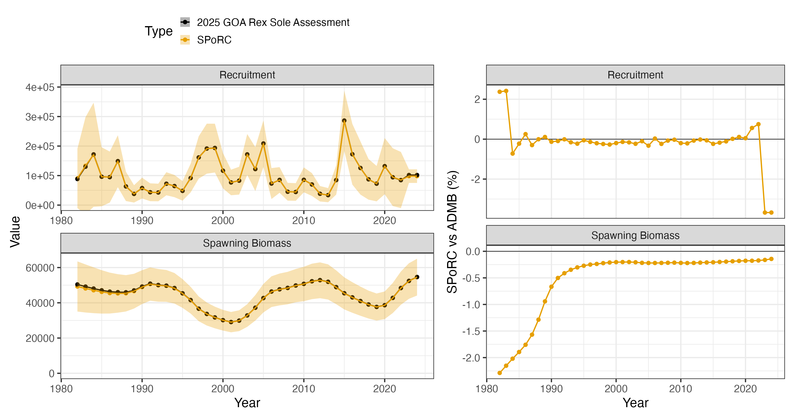
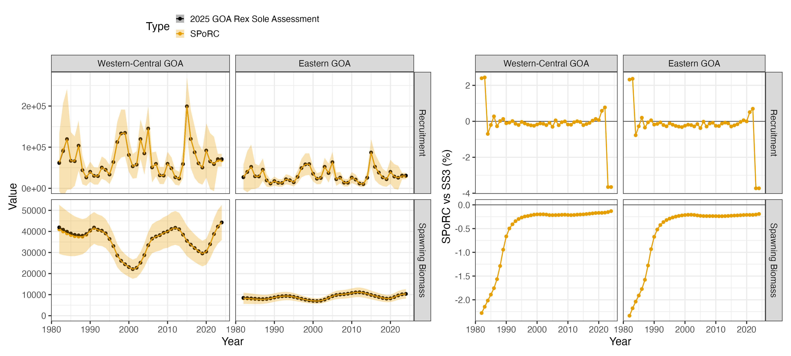
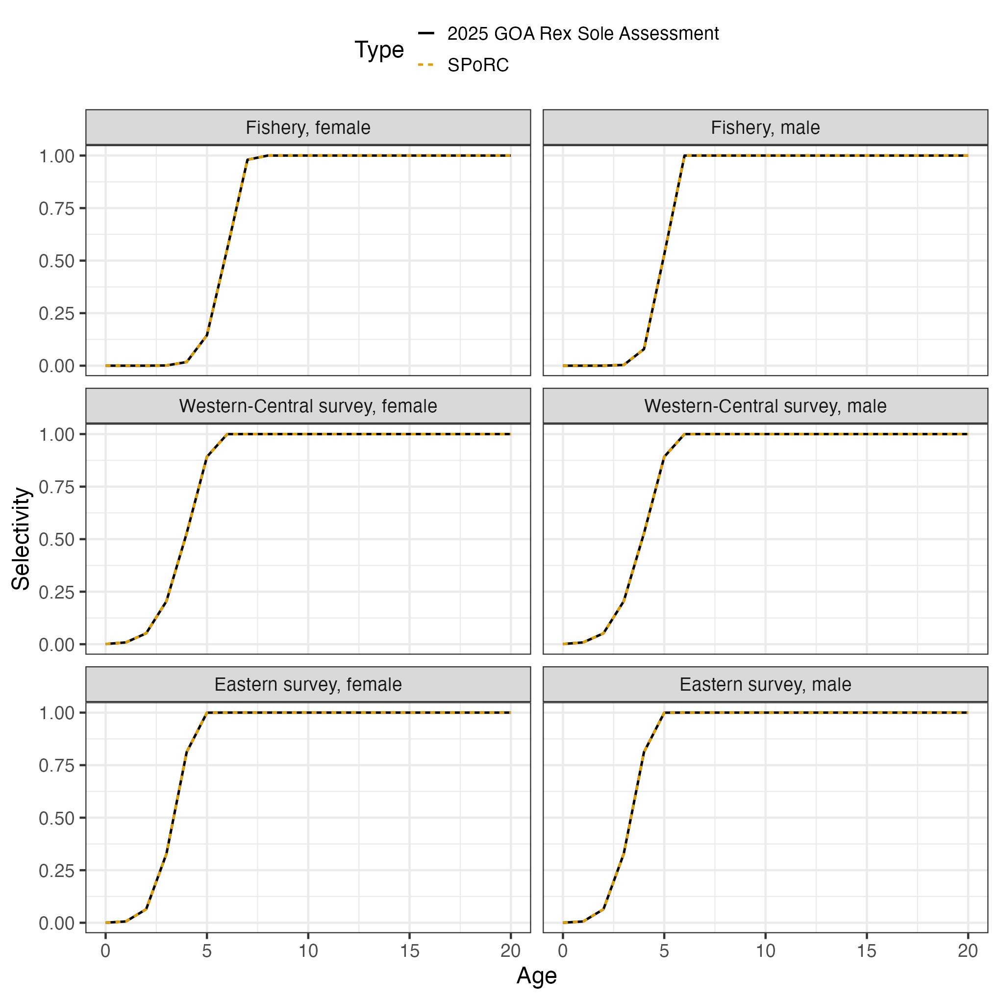
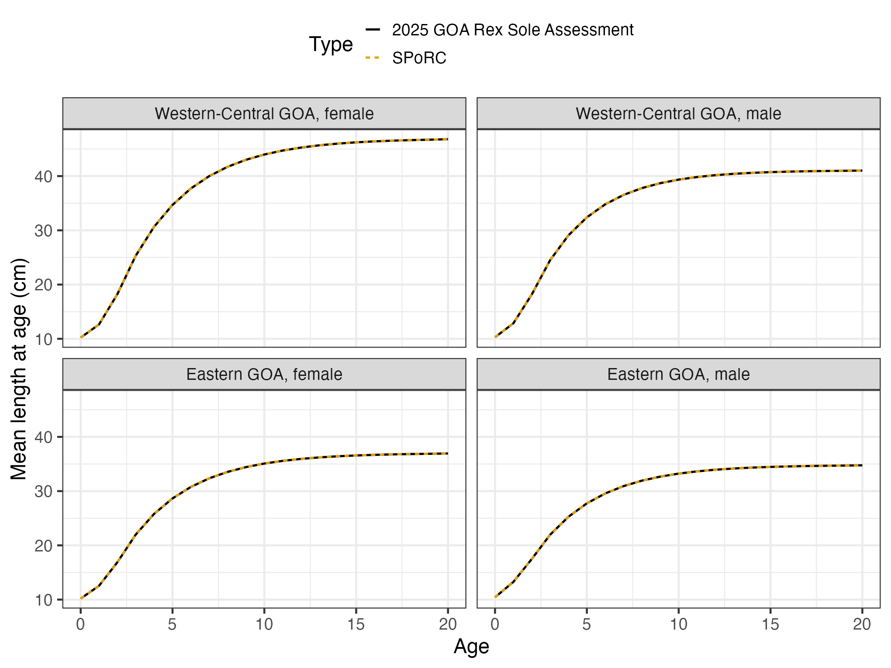

Case Study: GOA Rex Sole
ad_goa_rex_sole_case_study.RmdOverview
This case study reproduces Model 25.1 of the 2025 Gulf of Alaska rex
sole assessment, run in Stock Synthesis 3, in SPoRC.
The model is two area, two sex, single season, with one fishery and
one bottom trawl survey in each area. Growth is estimated separately in
each area and sex from the survey’s conditional age-at-length data,
which is what this case study exercises: SPoRC’s parametric
growth module and its conditional age-at-length likelihood, both added
for it.
| Source | Years | Observations | Likelihood |
|---|---|---|---|
| Catch, Western-Central GOA | 1982–2024 | 43 | Lognormal, CV 0.01 |
| Survey biomass, both areas | 1990–2023 | 31 | Lognormal |
| Fishery length compositions | 1982–2024 | 21 | Multinomial |
| Fishery age compositions | 1992–2022 | 18 | Multinomial |
| Survey length compositions, both areas | 1990–2023 | 31 | Multinomial |
| Survey conditional age-at-length, both areas | 1993–2019 | 482 length bins | Multinomial |
Ages run to with ages observed from to , lengths are 29 two centimetre bins from 10 to 66 cm, and model years run to . Recruitment is age 0, mean recruitment apportioned between the two areas by an estimated fraction, with . The Eastern area carries no catch, so its population is shaped entirely by the survey.
library(SPoRC)
library(dplyr)
library(ggplot2)
data("mlt_rg_goa_rex_data")
dat <- mlt_rg_goa_rex_data
yrs <- dat$years
n_yrs <- length(yrs)
ages <- dat$ages
n_ages <- length(ages)
n_reg <- dat$n_regions
n_sex <- dat$n_sexes
n_fish <- dat$n_fish_fleets
n_srv <- dat$n_srv_fleetsWhat Stock Synthesis says differently
Two areas with no movement between them. The assessment’s areas are
separate growth patterns sharing one recruitment series, and nothing
moves. SPoRC carries that as two regions with the identity
movement matrix and a single global recruitment apportioned by region,
so the regional subscripts are real and the movement ones are not.
Conditional age-at-length is an age composition within a length bin.
Each length bin of a survey year holds the ages of the otoliths read
from that bin, and the assessment fits every such row as its own
multinomial with the number aged as its sample size. SPoRC
forms the expected row from the joint catch at length and age, the
size-age transition scaled by the survey numbers at age, and hands it to
the same composition likelihood the marginal ages use, which normalizes
the row across ages. No conditioning is written out anywhere.
Growth is the Schnute-Francis form with a linear start. Mean length
at age is
at
and
at
,
von Bertalanffy between them, and linear from the first length bin’s
lower edge at age 0 to
.
The coefficient of variation is linear in mean length between the two
reference ages and flat outside them. The plus group is not the curve at
age 20 but an exponentially weighted mixture of the ages it holds, the
rule the assessment inherits from SS3.24, which SPoRC
applies in every year since growth is constant. Weight at age is the
age-length key times weight at the bin midpoints.
The early deviations each carry their own bias correction. The
seventeen deviations setting ages 1 to 17 of the first year belong to
1965 through 1981, and the assessment’s bias ramp is defined on calendar
years, so each takes the ramp value of its own year. SPoRC
reads the ramp at deviation index
for the deviation on age
.
Shared deviations are penalized once. The recruitment and initial age deviations are one series shared by both areas, and by both sexes for the initial ages, so each carries one penalty however many cells of the parameter array hold it.
Catchability is mirrored. The Eastern survey’s catchability is the
Western-Central survey’s parameter, which the map expresses by giving
the two cells of ln_srv_q one level.
Fishing mortality is solved, not estimated. Under the hybrid method
Stock Synthesis conditions
on the catch, while SPoRC estimates it against a lognormal
catch likelihood at CV 0.01.
The main recruitment deviations sum to zero. The assessment declares
them a devvector (do_recdev = 1), which ADMB
constrains to sum to zero, so the 41 deviations of 1982 to 2022 carry 40
degrees of freedom and
is the geometric mean recruitment of those years by construction.
SPoRC leaves its deviations free under the penalty, so the
two agree at the assessment’s estimate, where the deviations already sum
to zero, and part company on refitting.
The composition constant is renormalized. Stock Synthesis adds
to each observed and expected proportion and divides by the new total,
so every composition likelihood is the SPoRC value scaled
by
. The comparison below
undoes that.
Model dimensions
input_list <- Setup_Mod_Dim(
years = yrs,
ages = ages,
lens = dat$lens,
n_regions = n_reg,
n_sexes = n_sex,
n_fish_fleets = n_fish,
n_srv_fleets = n_srv,
n_seas = 1,
n_pop = 1,
natal_region = 1,
verbose = FALSE
)Recruitment
Recruitment is age 0 at the start of the year under mean recruitment with global density dependence, apportioned to the two areas by an estimated logit. The first year’s ages 1 to 17 are set by early deviations shared across areas and sexes, and the bias ramp’s four breakpoints are given in deviation index space, where the first model year is 1.
input_list <- Setup_Mod_Rec(
input_list = input_list,
rec_model = "mean_rec",
rec_dd = "global",
rec_lag = 0,
SR_ref_yr = 1,
t_spawn = 0,
sigmaR_spec = "fix",
ln_sigmaR = array(log(dat$rec$sigmaR), dim = c(2, 1, n_reg)),
sigmaR_switch = 1,
do_rec_bias_ramp = 1,
bias_year = dat$rec$bias_years - yrs[1] + 1,
max_bias_ramp_fct = dat$rec$max_bias_adj,
RecDevs_spec = "est_shared_pop_r",
RecDevs_pen_center = "fixed",
dont_est_recdev_last = 0,
init_age_strc = 2,
equil_init_age_strc = 1,
InitDevs_spec = "est_shared_pop_r",
InitDevs_sex_spec = "est_shared_s",
InitDevs_pen_center = "fixed",
rec_region_prop_spec = NULL,
ln_global_R0 = dat$mle$ln_R0
)Two of the breakpoints fall before the first model year, 1958.7 and 1988.5 become and , which is how the early deviations find their ramp values. The bridge stage checks both ramps against the assessment’s own.
Biological dynamics
Natural mortality is fixed at 0.17. Maturity is logistic on age for females, with none below age 3, and males carry none. Growth is estimated, one Schnute-Francis curve per area and sex, starting from the assessment’s estimates, and weight at age is derived from it through the weight-length relationship.
MatAA <- array(0, dim = c(1, n_reg, n_yrs, 1, n_ages, n_sex))
mat_f <- 1 / (1 + exp(dat$mat$slope * (ages - dat$mat$a50)))
mat_f[ages < dat$mat$first_mature_age] <- 0
for(r in 1:n_reg) for(y in 1:n_yrs) MatAA[1, r, y, 1, , 1] <- mat_f
wl <- array(NA_real_, dim = c(1, n_reg, n_sex, 2))
for(r in 1:n_reg) {
wl[1, r, 1, ] <- dat$wtlen$fem
wl[1, r, 2, ] <- dat$wtlen$mal
}
input_list <- Setup_Mod_Biologicals(
input_list = input_list,
WAA = NULL,
MatAA = MatAA,
fit_lengths = 1,
SizeAgeTrans = NA,
AgeingError = dat$AgeingError,
M_spec = "fix",
Fixed_natmort = array(dat$growth[[1]]$M, dim = c(1, n_reg, n_yrs, n_ages, n_sex)),
addtocomp = dat$comp$addtocomp_age,
comp_const_obs = 1,
addtosrvidx = 0,
addtofishidx = 0,
growth_model = "vb_schnute",
ln_growth_pars = log(dat$mle$growth),
growth_spec = "est_all",
growth_A1 = dat$growth_A1,
growth_A2 = dat$growth_A2,
growth_len_lower = dat$lens_lower,
growth_L0 = dat$lens_lower[1],
growth_plus_group = "mixture",
waa_model = "wt_len",
wt_len_pars = wl
)WAA = NULL and SizeAgeTrans = NA because
both come out of the growth module rather than going in as data. Each
fleet’s age-length key and weight at age are read at that fleet’s own
timing: the surveys’ at t_srv and the fishery’s at
t_fish, both the middle of the year here, where the
assessment reads them, and the spawning weight at t_spawn.
growth_len_lower carries the lower edges of the bins, which
is what the assessment’s key is built on, rather than the midpoints in
lens.
The ageing error matrix is the assessment’s, a normal on observed age with the standard deviation growing with true age, binned to the observed ages 1 to 20 with the tails accumulated into the end bins.
Movement and tagging
Nothing moves, so movement is fixed at the identity and tagging is off.
input_list <- Setup_Mod_Movement(
input_list = input_list,
use_fixed_movement = 1,
Fixed_Movement = NA,
do_recruits_move = 0
)
input_list <- Setup_Mod_Tagging(input_list = input_list, use_conv_fish_tagging = 0)Catch and fishing mortality
Catch is in the Western-Central area only. Fishing mortality is a free parameter per year with no penalty, held to the catch by a lognormal likelihood at CV 0.01.
input_list <- Setup_Mod_Catch_and_F(
input_list = input_list,
ObsCatch = dat$ObsCatch,
UseCatch = dat$UseCatch,
Use_F_pen = 0,
ln_F_mean_spec = "fix",
sigmaC_spec = "fix",
ln_sigmaC = array(log(dat$catch_se_value), dim = c(n_reg, n_yrs, 1, n_fish))
)Fishery compositions
The fishery has no index and carries joint-sex marginal lengths and ages.
joint <- function(n) paste0("spltRjntS_Year_1-terminal_Fleet_", seq_len(n))
none <- function(n) paste0("none_Year_1-terminal_Fleet_", seq_len(n))
input_list <- Setup_Mod_FishIdx_and_Comps(
input_list = input_list,
ObsFishIdx = array(NA_real_, dim = c(n_reg, n_yrs, 1, n_fish)),
ObsFishIdx_SE = array(NA_real_, dim = c(n_reg, n_yrs, 1, n_fish)),
UseFishIdx = array(0, dim = c(n_reg, n_yrs, 1, n_fish)),
fish_idx_type = rep("none", n_fish),
FishIdx_LikeType = rep("lognormal", n_fish),
ObsFishAgeComps = dat$ObsFishAgeComps,
UseFishAgeComps = dat$UseFishAgeComps,
ISS_FishAgeComps = dat$ISS_FishAgeComps,
ObsFishLenComps = dat$ObsFishLenComps,
UseFishLenComps = dat$UseFishLenComps,
ISS_FishLenComps = dat$ISS_FishLenComps,
FishAgeComps_LikeType = rep("Multinomial", n_fish),
FishLenComps_LikeType = rep("Multinomial", n_fish),
FishAgeComps_Type = joint(n_fish),
FishLenComps_Type = joint(n_fish)
)Survey indices and compositions
Each area’s survey carries a biomass index at mid year, joint-sex length compositions, and conditional age-at-length. The assessment also holds the surveys’ marginal ages as ghost fleets, so those go in but are not fit.
The conditional age-at-length arrays are indexed by region, year,
season, length bin, age, sex and fleet, with a use flag and a sample
size per length bin. Srv_caal_Type is split by sex as well
as region, since each row holds one sex’s otoliths.
t_srv <- array(rep(dat$t_srv, each = n_reg), dim = c(n_reg, 1, n_srv))
input_list <- Setup_Mod_SrvIdx_and_Comps(
input_list = input_list,
ObsSrvIdx = dat$ObsSrvIdx,
ObsSrvIdx_SE = dat$ObsSrvIdx_SE,
UseSrvIdx = dat$UseSrvIdx,
srv_idx_type = rep("biom", n_srv),
SrvIdx_LikeType = rep("lognormal", n_srv),
ObsSrvAgeComps = dat$ObsSrvAgeComps,
UseSrvAgeComps = array(0, dim = dim(dat$UseSrvAgeComps)),
ISS_SrvAgeComps = dat$ISS_SrvAgeComps,
ObsSrvLenComps = dat$ObsSrvLenComps,
UseSrvLenComps = dat$UseSrvLenComps,
ISS_SrvLenComps = dat$ISS_SrvLenComps,
SrvAgeComps_LikeType = rep("none", n_srv),
SrvLenComps_LikeType = rep("Multinomial", n_srv),
SrvAgeComps_Type = none(n_srv),
SrvLenComps_Type = joint(n_srv),
ObsSrv_caal = dat$ObsSrv_caal,
UseSrv_caal = dat$UseSrv_caal,
ISS_Srv_caal = dat$ISS_Srv_caal,
Srv_caal_LikeType = rep("Multinomial", n_srv),
Srv_caal_Type = paste0("spltRspltS_Year_1-terminal_Fleet_", seq_len(n_srv)),
t_srv = t_srv
)Selectivity
Every fleet is an age-based double normal, time invariant, with the
male curve a parameter offset from the female one. The assessment leaves
the ascending limb’s starting height unanchored and takes the descending
limb to one, which fish_sel_dbnrml_raw and
srv_sel_dbnrml_raw express.
input_list <- Setup_Mod_Fishsel_and_Q(
input_list = input_list,
fish_sel_model = paste0("dbnrml_Fleet_", seq_len(n_fish)),
cont_tv_fish_sel = paste0("none_Fleet_", seq_len(n_fish)),
fish_sel_blocks = paste0("none_Fleet_", seq_len(n_fish)),
fish_q_blocks = paste0("none_Fleet_", seq_len(n_fish)),
fish_fixed_sel_pars_spec = rep("est_all", n_fish),
fish_sel_sex_offset = rep("par", n_fish),
fish_sel_dbnrml_raw = matrix(c(1, 0), n_fish, 2, byrow = TRUE),
fish_q_spec = rep("fix", n_fish)
)
q_prior <- data.frame(region = 1, fleet = 1, block = 1,
mu = exp(dat$q$prior_mean), sd = dat$q$prior_sd)
input_list <- Setup_Mod_Srvsel_and_Q(
input_list = input_list,
srv_sel_model = paste0("dbnrml_Fleet_", seq_len(n_srv)),
cont_tv_srv_sel = paste0("none_Fleet_", seq_len(n_srv)),
srv_sel_blocks = paste0("none_Fleet_", seq_len(n_srv)),
srv_q_blocks = paste0("none_Fleet_", seq_len(n_srv)),
srv_fixed_sel_pars_spec = rep("est_all", n_srv),
srv_sel_sex_offset = rep("par", n_srv),
srv_sel_dbnrml_raw = matrix(c(1, 0), n_srv, 2, byrow = TRUE),
srv_q_spec = rep("est_all", n_srv),
Use_srv_q_prior = 1,
srv_q_prior = q_prior,
t_srv = t_srv
)The Western-Central survey’s catchability carries the assessment’s normal prior on the log scale. The Eastern survey’s is mirrored onto it by the map, which the bridge helper sets once the parameters are seeded.
Weighting
Francis weights, one per fleet, on the lengths and on the ages, with the conditional age-at-length taking each survey’s age weight.
wl_f <- dat$var_adj_len[dat$fish_fleets]; wa_f <- dat$var_adj_age[dat$fish_fleets]
wl_s <- dat$var_adj_len[dat$srv_fleets]; wa_s <- dat$var_adj_age[dat$srv_fleets]
per_fleet <- function(w, n_fl, extra = NULL) {
d <- c(n_reg, n_yrs, 1, if(!is.null(extra)) extra, n_sex, n_fl)
arr <- array(1, dim = d)
for(f in seq_len(n_fl)) if(is.null(extra)) arr[, , , , f] <- w[f] else arr[, , , , , f] <- w[f]
arr
}
input_list <- Setup_Mod_Weighting(
input_list = input_list,
Wt_Catch = 1, Wt_FishIdx = 0, Wt_SrvIdx = 1, Wt_Rec = 1, Wt_F = 1, Wt_Tagging = 0,
Wt_FishAgeComps = per_fleet(wa_f, n_fish),
Wt_FishLenComps = per_fleet(wl_f, n_fish),
Wt_SrvAgeComps = per_fleet(rep(1, n_srv), n_srv),
Wt_SrvLenComps = per_fleet(wl_s, n_srv),
Wt_Srv_caal = per_fleet(wa_s, n_srv, extra = length(dat$lens))
)Starting at the assessment’s estimate
Every parameter is set to the assessment’s estimate and the model is
evaluated there without optimizing. The bridge helper does this in one
call; the pieces are the recruitment and early deviations less their
bias corrections, log fishing mortality as a fixed mean plus deviations,
the shared catchability, and the growth and selectivity parameters in
SPoRC’s transforms.
source(system.file("tests", "testthat", "helper-bridge_goa_rex.R", package = "SPoRC"))
input_list <- seed_goa_rex_mle(build_goa_rex_input(dat), dat)
seed <- fit_model(input_list$data, input_list$par, input_list$map,
do_optim = FALSE, silent = TRUE)The comparison before anything is optimized, against a report file carrying six significant digits:
numbers at age 5.1e-03 %
spawning biomass 4.7e-03 %
recruitment 5.0e-03 %
total biomass, January 1 4.8e-03 %
predicted catch 5.0e-03 %
survey indices 4.7e-03 %
mean length at age 4.9e-04 %
SD of length at age 4.7e-04 %
weight at age 9.4e-04 %
bias ramps, main and early 1e-06 (absolute)
selectivity, all six curves 2.7e-06 (absolute)
mid-season age-length key 1.8e-06 (absolute)
expected conditional age-at-length 1e-04 (absolute)SPoRC writes each likelihood component as a proper
density where the assessment drops normalising constants and
renormalizes after its composition constant, so the comparison subtracts
exactly what it omits:
| Component |
SPoRC less constants |
Assessment | Difference |
|---|---|---|---|
| Survey indices | -16.624337 | -16.624600 | |
| Length compositions | 173.730454 | 173.730000 | |
| Age compositions, marginal and conditional | 472.900640 | 472.878000 | |
| Recruitment deviations, early and main | -3.195058 | -3.195050 | |
| Catchability prior | 0.161410 | 0.161411 |
The total comes to 626.9731 against the assessment’s 626.9510. The
whole difference sits in the age compositions,
of their value, and is the conditional age-at-length rows, where the
assessment’s constant is added before the row is filtered to the
observed bins and SPoRC’s after.
Fitting and comparison
est <- fit_model(input_list$data, input_list$par, input_list$map,
do_optim = TRUE, newton_loops = 3, silent = TRUE)
est$sdrep <- RTMB::sdreport(est, hessian.fixed = est$he(est$optim$par))132 parameters, 20 of them growth and 22 selectivity, which is the assessment’s own count. The objective falls by 0.10 from the assessment’s estimate, and the fitted selectivity stays within of the assessment’s on every curve.
| Median | Maximum | |
|---|---|---|
| Spawning biomass, total | -0.22 % | 2.3 % |
| Recruitment, total | -0.13 % | 3.7 % |
| Spawning biomass, Western-Central GOA | -0.21 % | 2.3 % |
| Spawning biomass, Eastern GOA | -0.24 % | 2.3 % |
SPoRC |
Assessment | |
|---|---|---|
| 11.49400 | 11.53150 | |
| Catchability | 1.09617 | 1.09349 |
| Eastern apportionment, logit | -0.82909 | -0.82836 |
| , Western-Central female | 13.8667 | 13.8634 |
| , Western-Central female | 46.7532 | 46.7417 |
| , Western-Central female | 0.28356 | 0.28384 |
| , Eastern female | 13.7195 | 13.7239 |
| , Eastern female | 36.9039 | 36.9021 |
| , Eastern female | 0.29256 | 0.29252 |




Why the two differ
Everything in the population dynamics, the growth, the observation model and the selectivity agrees at the assessment report’s own print precision, and so does every likelihood component but the conditional age-at-length constant. The refit moves spawning biomass by a quarter of a percent and by 0.04.
The difference is the sum-to-zero constraint on the assessment’s
recruitment deviations. Stock Synthesis declares them a
devvector, so the 41 deviations of 1982 to 2022 sum to zero
and
is the mean recruitment of those years by construction.
SPoRC estimates its deviations freely under the penalty, so
the mean recruitment of the years carrying deviations can differ from
,
which also sets the initial equilibrium and the two terminal years
without deviations. Under mean recruitment with no stock-recruit curve
the data prefer about two percent more recruitment in the deviation
years, so
falls almost 4 percent with the deviations rising to match, and the
early years, held by the prior on the initial-age deviations rather than
by data, follow
part of the way.